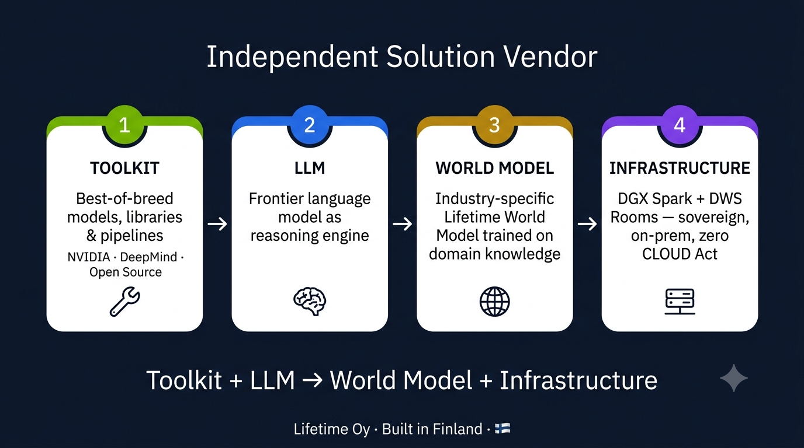

One sovereign platform — the DWS IQ Industrial Intelligence suite. The core engine (DWS IQ 6) spans 25 EU-regulated industries, clustered into 16 captain hats; the defence/dual-use tier (Aegis) hardens it for sovereign deployment. Eleven regulated verticals are featured below, each with its own industry-trained model, compliance logic, and Firehorse business application. Pick yours — or own it as Industry Captain.
DWS IQ is an independent solution vendor. Every industry vertical ships a curated Toolkit (models, libraries, pipelines from NVIDIA, Google DeepMind, and open-source communities) combined with the best LLM for the domain, trained into a Lifetime World Model with industry-specific knowledge, and deployed on Sovereign Infrastructure (DGX Spark + DWS Rooms). We select the best tools for each domain, not the ones from a single vendor. Whitepapers and product cards document every integration.

These 11 verticals are shipping today; the platform spans all 25 EU-regulated industries (per INDUSTRIES.md), clustered into 16 captain hats. Each card shows the regulatory frame, what DWS IQ + Firehorse does, and the route into the industry page. The Industry Captain seat owns the vertical: roadmap, design partners, board observer rights.
EPBD · EN 15978 · CSRD · Fit for 55
Building-level lifecycle assessment, EPBD reporting, and embodied-carbon balance sheets across A1–D stages.
ETS2 · CSRD · CountEmissionsEU · CBAM
Freight emissions, scope 3 transport, and ETS2 readiness for road, rail, and multimodal fleets.
ETS · CSRD · ESPR · CBAM
Plant-level energy + emissions, Digital Product Passports, and ESRS-aligned CSRD reporting.
ETS Direct · EED · RED III · CSRD
Power & heat operators — ETS allowance management, EED audits, REPowerEU compliance, and ESRS E1 disclosures.
CSRD · GDPR · EHDS · MDR · EU AI Act
Hospital networks, MedTech, and life sciences — facility carbon, ESRS S1, EHDS-aligned secondary data use, and NVIDIA BioNeMo-powered drug discovery and genomic analysis.
EPBD · CSRD · Taxonomy · ESPR
Portfolio-level energy performance, renovation roadmaps, and Taxonomy alignment for REITs and asset managers.
SFDR · CSRD · Taxonomy · CRR3
Banks, insurers, asset managers — financed-emissions accounting, SFDR PAIs, Taxonomy KPIs, and CSRD value-chain assurance.
CSRD · GDPR · GPP · NIS2
Municipalities and agencies — sovereign on-prem AI for procurement, GPP green procurement, and CSRD-aligned annual reports.
CRMA · ESR · CSRD · Taxonomy
Critical Raw Materials Act compliance, ESG monitoring, and on-site emissions tracking for EU and CBAM-exposed operators.
ETS Maritime · EN 14017 · CSRD · FuelEU Maritime
Yards and class societies — vessel-level lifecycle assessment, ETS maritime emissions, and FuelEU Maritime fuel reporting.
WFD · ESR · CSRD · ESPR
Waste operators and circular-economy players — Waste Framework Directive reporting, material recovery, and ESPR digital product passport feeds.
How one disruption propagates across the 25-industry hub. Anchored to real EU milestones: first-wave CSRD reports (covering FY2024, including ESRS E5 resource-use & circular-economy datapoints) were filed in 2025; the EU AI Act is phasing in across 2024–2026; CBAM remained transitional through 2025.
16 captain hats cluster the 25 EU-regulated industries; open Platinum seats start at €50K SAFE per seat. Each Captain owns an industry cluster on DWS IQ 6: roadmap influence, board observer rights, and the founding crew that shapes the model in their vertical.
Industries Hub — page v1.3 · 2026-06-27 · Independent Solution Vendor banner + Toolkit pattern